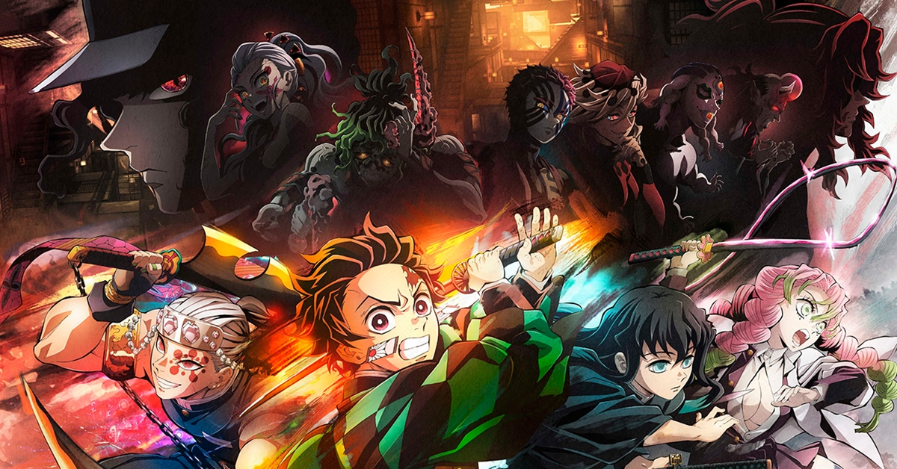

Ranking dos Arcos de "Kimetsu no Yaiba": Desafios Épicos Revelados!
Embarque em uma jornada pelos arcos narrativos de "Kimetsu no Yaiba" com nosso ranking das sagas mais intensas e emocionantes. Do mistério da Mansão das Aranhas à ação explosiva do Trem Infinito, cada história oferece desafios, desenvolvimento de personagens e reviravoltas. Descubra o arco mais impactante na trama geral!
Arco do Distrito de Entretenimento

Altamente elogiado por seu desenvolvimento de personagens e batalhas intensas. Tanjiro e seus amigos enfrentam um Lua Superior em um distrito de entretenimento, resultando em lutas memoráveis e crescimento significativo dos personagens.
Arco do Trem Infinito
Uma jornada emocionante a bordo de um trem, onde ocorre uma batalha crucial contra outro Lua Superior. Este arco é essencial para o desenvolvimento de Tanjiro e Nezuko e tem um impacto profundo na trama.
Arco da Seleção Final
O ponto de partida da jornada de Tanjiro como caçador de demônios. Este arco estabelece as bases para a história e apresenta desafios que testam as habilidades e a determinação do protagonista.
Arco da Casa do Tambor
Introduz Zenitsu e Inosuke, oferecendo cenas de luta impressionantes. Este arco é marcado pela ação e pela introdução de personagens importantes.
Arco da Contagem Regressiva para o Amanhecer
O confronto final com Muzan é intenso e conclui a história principal. Alguns críticos consideram que o desfecho foi um pouco apressado, mas ainda assim impactante.
Arco de Asakusa
Importante por ser a primeira vez que Tanjiro encontra Muzan e enfrenta uma ameaça demoníaca significativa. Este arco é crucial para a evolução da trama e do protagonista.